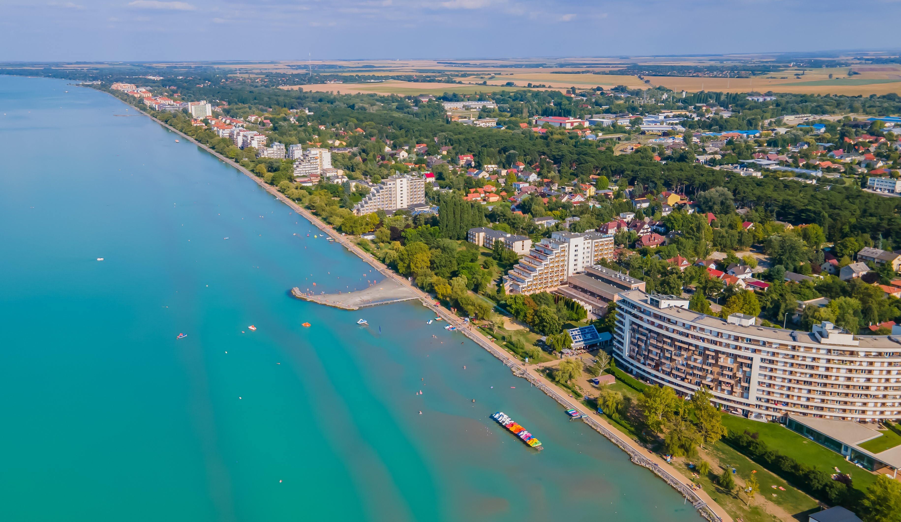
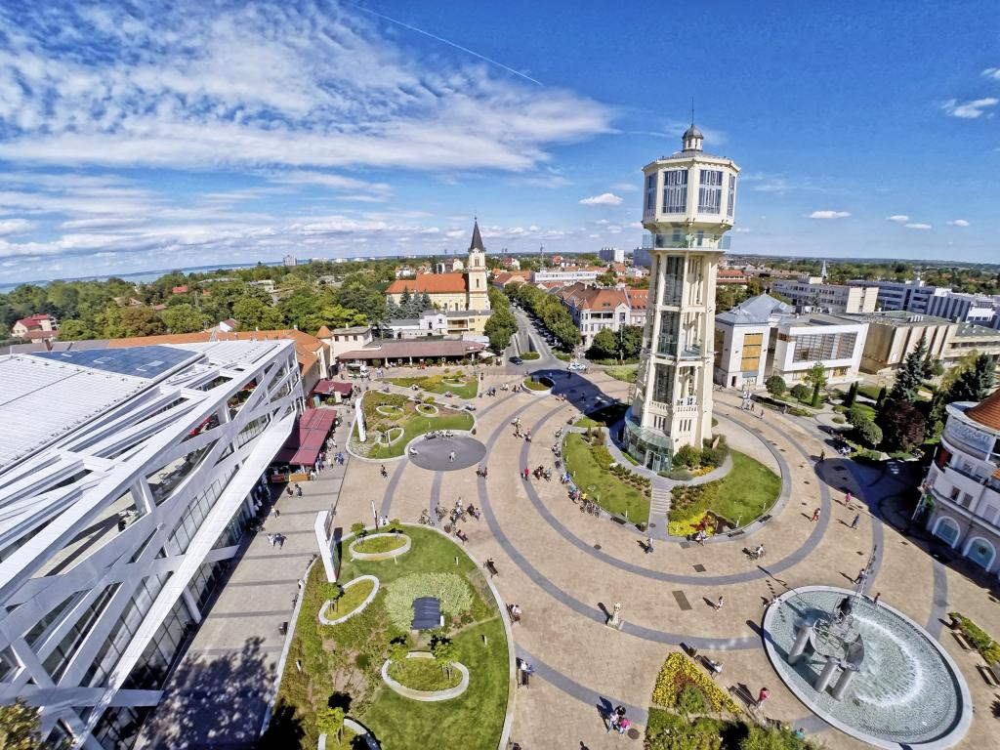

Apartmanjaink
Rólunk
Szabadidős lehetőségek
Kapcsolat

Üdvözöljük az EdaBeach weboldalán!
Siófok egyik legismertebb nyaralója, amely közvetlen Balaton partja mellett található. Erkélyes apartmanjainkból páratlat kilátás nyílik a tóra.
+SUP bérlés

Tel.: +36 88 88 88 888 / +36 99 99 99 999
e-mail: edabeachsiofok1@gmail.com